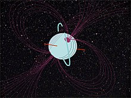
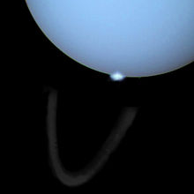
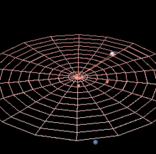
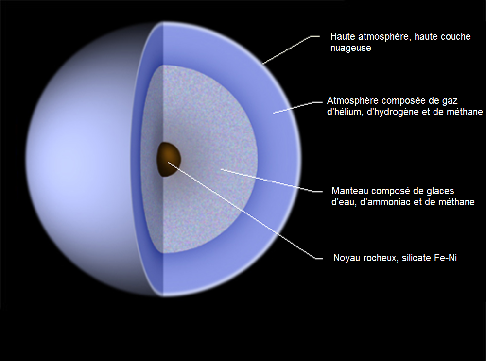

Uranus est une planète géante de glaces de type Neptune froid. Il s'agit de la 7e planète du Système solaire par sa distance au Soleil,
de la 3e par la taille et de la 4e par la masse. Elle doit son nom à la divinité romaine du ciel, Uranus, père de Saturne et grand-père
de Jupiter. Uranus est la première planète découverte à l’époque moderne. Bien qu'elle soit visible à l’œil nu comme les cinq planètes déjà connues,
son caractère planétaire ne fut pas identifié en raison de son très faible éclat (à la limite de la visibilité) et de son déplacement apparent très lent.
William Herschel annonce sa découverte le 26 avril 1781, élargissant les frontières connues du Système solaire pour la première fois à l’époque moderne.
Uranus est la première planète découverte à l’aide d’un télescope.
Uranus et Neptune ont des compositions internes et atmosphériques différentes de celles des deux plus grandes géantes gazeuses, Jupiter et Saturne. Les astronomes les
placent donc de nos jours généralement dans une catégorie différente, celle des géantes glacées ou des sous-géantes. L’atmosphère d’Uranus, bien que composée
principalement d’hydrogène et d’hélium, contient une proportion plus importante de glaces d’eau, d’ammoniac et de méthane, ainsi que les traces habituelles d’hydrocarbures.
Uranus est la planète du Système solaire dont l’atmosphère est la plus froide, sa température minimale étant de 49 K (−224 °C), à la tropopause (vers 56 km d'altitude et 0,1 bar,
le niveau zéro étant défini à une pression d'un bar).
À l’instar des autres géantes gazeuses, Uranus a un système d’anneaux, une magnétosphère et de nombreux satellites naturels. Il y a 27 satellites et 13 anneaux étroits.
Le système uranien est unique dans le Système solaire car son axe de rotation est pratiquement dans son plan de révolution autour du Soleil ;
les pôles nord et sud sont situés où les autres planètes ont leur équateur. En 1986, les images de Voyager 2 ont montré Uranus comme une planète sans caractéristique particulière
en lumière visible. Cette visite de la sonde se produisit près du solstice, l'hémisphère éclairé était alors principalement son hémisphère austral. En 2017, au printemps boréal
d'Uranus, le télescope Keck II montre des bandes nuageuses en infra-rouge. On y remarque des mouvements de nuages, des vents à 900 km/h, d'énormes ouragans et des ondulations
étranges en forme de tresse cerclant la planète.
Cependant, les observateurs terrestres ainsi que le télescope spatial Hubble ont depuis constaté des signes de changements saisonniers et une augmentation de l’activité météorologique
lorsqu'Uranus a approché de son équinoxe, atteint le 8 décembre 2007.
Caractéristiques physiques
Masse et diamètre
Avec une masse de 8,6810 ×1025 kg, Uranus est un corps intermédiaire entre la Terre et les géantes gazeuses de grande taille comme Jupiter ou Saturne. Sa masse est environ quatorze fois plus
importante que celle de la Terre. Le rayon équatorial de la planète est de 25 559 km, soit environ quatre fois celui de la Terre. Uranus a la particularité d'être plus grande que Neptune
(49 528 km pour Neptune contre 51 118 km pour Uranus) mais moins massive qu'elle (Neptune possède une masse de 1,024 ×1026 kg).
Neptune et Uranus sont souvent considérées comme une sous-classe de géantes, appelée « géants de glace », en raison de leur taille plus petite et d'une
plus forte concentration de substances volatiles par rapport à Jupiter et Saturne.
Champ magnétique
Avant le passage de Voyager 2, aucune étude de la magnétosphère uranienne n'avait pu être effectuée, sa nature restant un mystère. Avant 1986, les astronomes s'attendaient à ce que le champ magnétique
d'Uranus soit aligné sur le vent solaire, puisqu'il serait alors aligné avec les pôles, qui sont sur le plan de l'écliptique.
Les relevés de Voyager 2 révélèrent un champ magnétique très particulier, d'une part parce qu'il n'a pas pour origine le centre géométrique de planète,
et d'autre part parce qu'il penche de 59° par rapport à l'axe de rotation. En fait, le dipôle magnétique présente même un déséquilibre vers le pôle géographique
sud par rapport au centre, équivalent à un tiers du rayon planétaire. Cette géométrie inhabituelle a pour conséquence une magnétosphère fortement asymétrique,
la force du champ magnétique à la surface du pôle sud pouvant être aussi basse que 0,1 gauss (10 µT), alors qu'au pôle nord, elle peut atteindre 1,1 gauss (110 µT).
Le champ magnétique moyen en surface a une force de 0,23 gauss (23 µT). À titre indicatif, le champ magnétique terrestre est à peu près de force équivalente aux
deux pôles et l'« équateur magnétique » est actuellement à peu près parallèle à l'équateur géographique. Le moment magnétique bipolaire d'Uranus est 50 fois
celui de la Terre. Un tel champ magnétique penché et déséquilibré se retrouve également sur Neptune, laissant à penser qu'il s'agit d'une caractéristique
commune des géantes glacées. Une des hypothèses à ce sujet est qu'alors que le champ magnétique des planètes telluriques et des géantes gazeuses est engendré
par leur noyau, celui des géantes glacées serait provoqué par des mouvements à des profondeurs relativement faibles, ici dans l'océan d'eau et d'ammoniaque.

La magnétosphère d’Uranus contient des particules chargées : des protons et des électrons avec une petite quantité d’ions H2+. Aucun ion plus lourd n’a été détecté. Bon nombre de
ces particules proviennent probablement de la couronne chaude de l’atmosphère. L’ion et les énergies d’électrons peuvent être aussi élevés que 4 et 1,2 mégaélectronvolts,
respectivement. La densité des ions de basse énergie (inférieure à 1 kiloélectronvolt) dans la magnétosphère intérieure est d’environ 2 par cm3. La population de
particules est fortement affectée par les lunes d’Uranus qui balayent la magnétosphère, laissant des lacunes importantes. Le flux de particules est suffisamment
élevé pour provoquer un noircissement ou une altération des surfaces des satellites sur une échelle de temps de 100 000 ans. Cela peut être la cause de la coloration
uniformément sombre des lunes et des anneaux
Uranus a des aurores polaires relativement bien développées, qui apparaissent comme des arcs lumineux autour des deux pôles magnétiques.
Contrairement à Jupiter, les aurores d’Uranus semblent être insignifiantes pour le bilan énergétique de la thermosphère planétaire.
Au contraire des aurores de la Terre ou de Jupiter, elles ne se situent pas à proximité des pôles géographiques de la planète,
du fait du champ magnétique penché. Des observations réalisées avec le télescope spatial Hubble en 2011, 2012 et 201X ont révélé les aurores
les plus importantes observées à ce jour sur la planète et ont permis de retrouver les pôles magnétiques de la planète, perdus peu après l'observation de la planète par Voyager 2.

Orbite et rotation
La période de révolution d’Uranus autour du Soleil est de 84 années terrestres. Sa distance moyenne au Soleil est d’environ 3 milliards de kilomètres.
L’intensité du flux solaire sur Uranus est d’environ 1⁄400 de celui reçu par la Terre.
Les paramètres orbitaux d’Uranus furent calculés pour la première fois par Pierre-Simon de Laplace en 1783. Avec le temps,
des différences apparurent entre l'orbite prédite et l'orbite calculée. En 1841, John Couch Adams émit l’hypothèse qu’une
planète inconnue serait la cause des perturbations constatées. En 1845, Urbain Le Verrier commença indépendamment ses
travaux afin d’expliquer l’orbite d’Uranus. Le 23 septembre 1846, Johann Gottfried Galle identifia une nouvelle planète (qui sera plus tard nommée Neptune)
à une position très proche de celle prédite par Le Verrier.

La période de rotation des couches intérieures d’Uranus est de 17 heures et 14 minutes. Cependant, la haute atmosphère d’Uranus est le théâtre de
vents très violents dans la direction de rotation, comme pour toutes les géantes gazeuses. Le vent à la surface d’Uranus peut atteindre
une vitesse de 250 m/s, soit 900 km/h. Par conséquent, à certaines latitudes, par exemple vers 60° de latitude, des parties visibles
de son atmosphère se déplacent beaucoup plus vite et effectuent une rotation complète en un peu moins de 14 heures.
Composition d'Uranus
Composition interne
La composition interne d'Uranus serait similaire à celle de Neptune. Elle possède très probablement un noyau solide de silicates et de fer d'à peu près la masse de la Terre.
Au-dessus de ce noyau, là encore à l'instar de Neptune, Uranus présenterait une composition assez uniforme (roches en fusion, glaces, 15 % d'hydrogène et un peu d'hélium)
et non pas une structure « en couches » comme Jupiter et Saturne.
Cependant, plusieurs modèles actuels de la structure d'Uranus et Neptune proposent l'existence de 3 couches : un cœur de type tellurique, une couche médiane allant de glacée
à liquide et formée d'eau, de méthane et d'ammoniac, et une atmosphère d'hydrogène et d'hélium dans les proportions solaires.
La pression maximum de la couche médiane est estimée à 600 GPa (6 millions d'atmosphères) et sa température maximum à 7 000 K. En 1981 les études théoriques et
les expériences réalisées par compression laser conduisent Marvin Ross, du Laboratoire national de Lawrence Livermore, à proposer que cette couche soit totalement
ionisée et que le méthane y soit pyrolysé en carbone sous forme de métal ou de diamant. Le méthane se décompose en carbone et en hydrocarbures. La précipitation du
carbone libère de la chaleur (énergie potentielle gravitationnelle convertie en chaleur) qui entraîne des courants de convection qui libèrent les hydrocarbures
dans l'atmosphère. Ce modèle expliquerait la présence d'hydrocarbures divers dans l'atmosphère de cette planète. Sous l'action de la pression, le carbone
adopte un état plus stable, le diamant solide qui flotte sur un océan de carbone métallique liquide. En 2017 de nouvelles expériences simulant les conditions présumées
régner 10 000 km sous la surface d'Uranus et de Neptune viennent conforter ce modèle en produisant des diamants de taille nanométrique. Ces conditions de hautes
température et pression ne peuvent pas être maintenues plus d'une nanoseconde, mais dans l'atmosphère de Neptune ou d'Uranus les nanodiamants auraient
le temps de croître pour donner des pluies (ou, plus exactement, des averses de neige ou de grêle) de diamants.

Atmosphère
L’atmosphère d'Uranus, comme celle de Neptune, est différente des deux géantes gazeuses, Jupiter et Saturne. Bien que principalement composée comme elles
d'hydrogène et d'hélium, elle possède une plus grande proportion de gaz volatils tels que l'eau, l'ammoniac et le méthane. Contrairement à Jupiter et Saturne,
Uranus ne posséderait pas de manteau d'hydrogène métallique ou d'enveloppe en dessous de sa haute atmosphère. À la place se trouverait une région
consistant en un océan composé d'ammoniac, d'eau et de méthane, dont la transition est graduelle sans limite claire avec l'atmosphère dominée par
de l'hydrogène et de l'hélium. À cause de ces différences, certains astronomes regroupent Uranus et Neptune dans leur propre catégorie, celle des
géantes glacées, pour les distinguer de Jupiter et Saturne.
Si vous voulez retourner en haut de la page, cliquez ici.